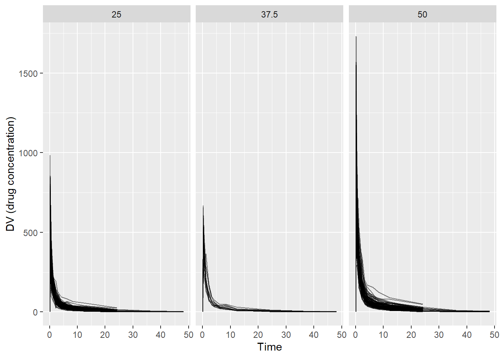
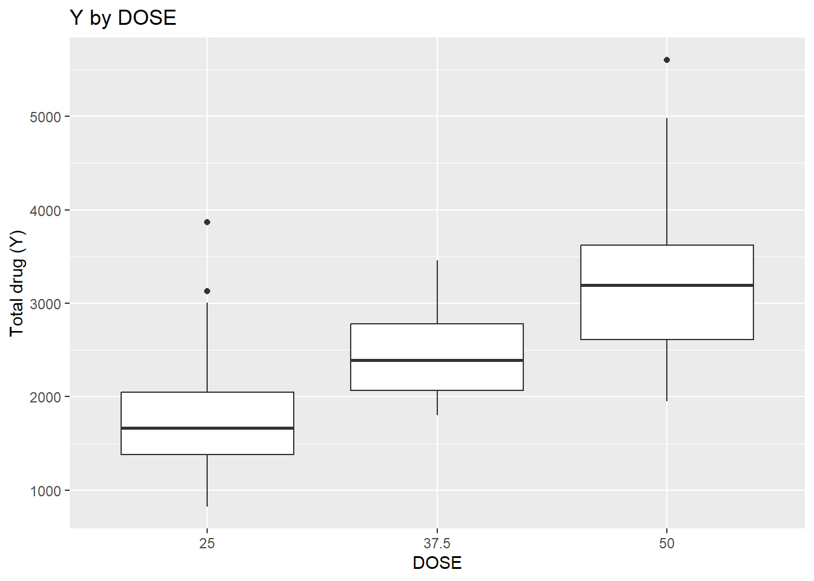
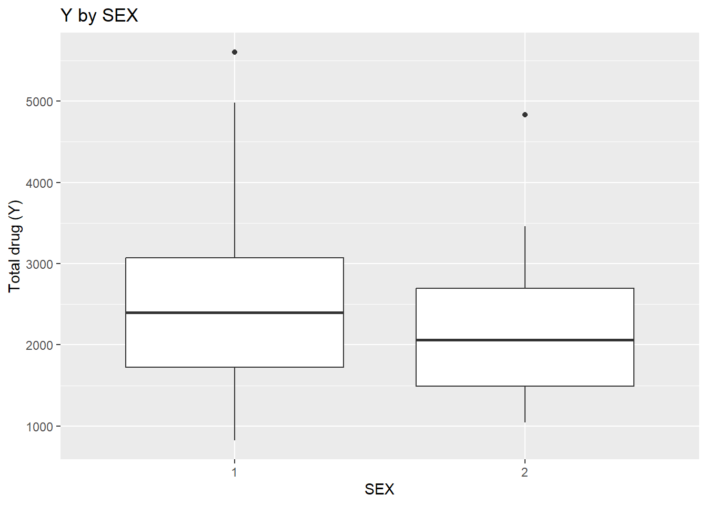
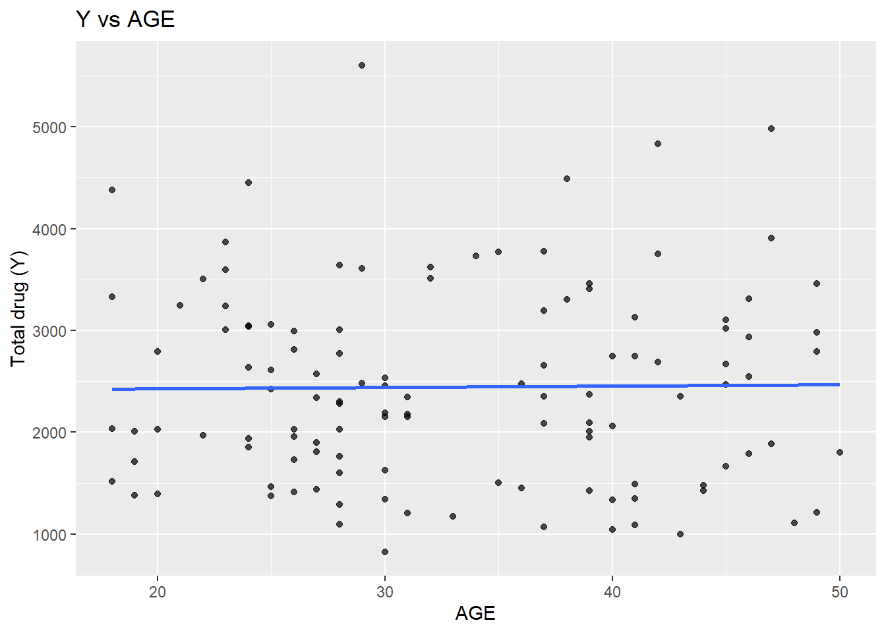
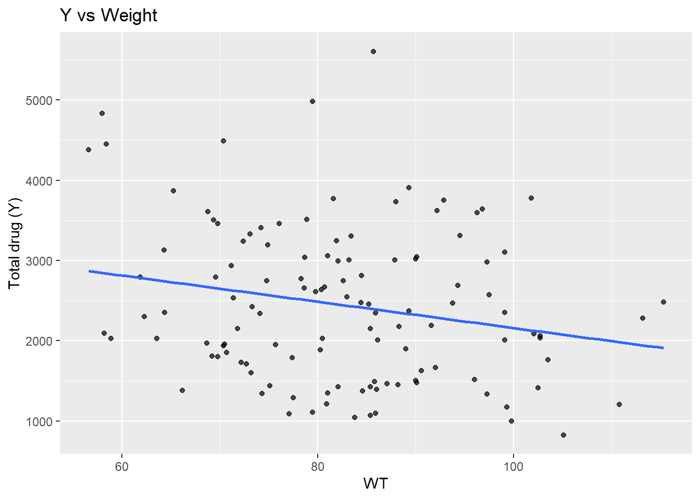

The raw dataset contains repeated time‐series measurements of drug concentration (DV) over time (TIME) for each individual (ID). The data also includes dosing information (DOSE, AMT) and basic demographics (AGE, SEX, RACE, WT, HT).
library(tidyverse)
── Attaching core tidyverse packages ──────────────────────── tidyverse 2.0.0 ──
✔ dplyr 1.2.0 ✔ readr 2.1.6
✔ forcats 1.0.1 ✔ stringr 1.6.0
✔ ggplot2 4.0.1 ✔ tibble 3.3.1
✔ lubridate 1.9.5 ✔ tidyr 1.3.2
✔ purrr 1.2.1
── Conflicts ────────────────────────────────────────── tidyverse_conflicts() ──
✖ dplyr::filter() masks stats::filter()
✖ dplyr::lag() masks stats::lag()
ℹ Use the conflicted package (<http://conflicted.r-lib.org/>) to force all conflicts to become errors
dat_raw <-read_csv("Mavoglurant_A2121_nmpk.csv")
Rows: 2678 Columns: 17
── Column specification ────────────────────────────────────────────────────────
Delimiter: ","
dbl (17): ID, CMT, EVID, EVI2, MDV, DV, LNDV, AMT, TIME, DOSE, OCC, RATE, AG...
ℹ Use `spec()` to retrieve the full column specification for this data.
ℹ Specify the column types or set `show_col_types = FALSE` to quiet this message.
ggplot(dat_raw, aes(x = TIME, y = DV, group = ID)) +geom_line(alpha =0.5) +facet_wrap(~ DOSE) +labs(x ="Time",y ="DV (drug concentration)" )

Plotting DV versus TIME (grouped by ID and stratified by DOSE): concentrations are highest shortly after dosing and decline over time. Higher dose groups appear to have higher concentration curves overall.
Remove OCC = 2
dat1 <- dat_raw %>%filter(OCC ==1)dim(dat1)
[1] 1665 17
table(dat_raw$OCC)
1 2
1665 1013
Some individuals have multiple occasions (OCC=1 and OCC=2), indicating repeated dosing/measurement periods. To keep the exercise simple and avoid having multiple trajectories per person, I kept only OCC=1 and removed OCC=2.
Y DOSE AGE SEX RACE
Min. : 826.4 Min. :25.00 Min. :18.00 1:104 1 :74
1st Qu.:1700.5 1st Qu.:25.00 1st Qu.:26.00 2: 16 2 :36
Median :2349.1 Median :37.50 Median :31.00 7 : 2
Mean :2445.4 Mean :36.46 Mean :33.00 88: 8
3rd Qu.:3050.2 3rd Qu.:50.00 3rd Qu.:40.25
Max. :5606.6 Max. :50.00 Max. :50.00
WT HT
Min. : 56.60 Min. :1.520
1st Qu.: 73.17 1st Qu.:1.700
Median : 82.10 Median :1.770
Mean : 82.55 Mean :1.759
3rd Qu.: 90.10 3rd Qu.:1.813
Max. :115.30 Max. :1.930
dat_clean %>%count(DOSE)
# A tibble: 3 × 2
DOSE n
<dbl> <int>
1 25 59
2 37.5 12
3 50 49
dat_clean %>%count(SEX)
# A tibble: 2 × 2
SEX n
<fct> <int>
1 1 104
2 2 16
# Y vs DOSE ggplot(dat_clean, aes(x =factor(DOSE), y = Y)) +geom_boxplot() +labs(x ="DOSE", y ="Total drug (Y)", title ="Y by DOSE")

# Y vs SEXggplot(dat_clean, aes(x = SEX, y = Y)) +geom_boxplot() +labs(x ="SEX", y ="Total drug (Y)", title ="Y by SEX")

# Y vs AGE ggplot(dat_clean, aes(x = AGE, y = Y)) +geom_point(alpha =0.7) +geom_smooth(method ="lm", se =FALSE) +labs(x ="AGE", y ="Total drug (Y)", title ="Y vs AGE")
`geom_smooth()` using formula = 'y ~ x'

ggplot(dat_clean, aes(x = WT, y = Y)) +geom_point(alpha =0.7) +geom_smooth(method ="lm", se =FALSE) +labs(x ="WT", y ="Total drug (Y)", title ="Y vs Weight")
`geom_smooth()` using formula = 'y ~ x'

ggplot(dat_clean, aes(x = HT, y = Y)) +geom_point(alpha =0.7) +geom_smooth(method ="lm", se =FALSE) +labs(x ="HT", y ="Total drug (Y)", title ="Y vs Height")
Y DOSE AGE WT HT
Y 1.00 0.72 0.01 -0.21 -0.16
DOSE 0.72 1.00 0.07 0.10 0.02
AGE 0.01 0.07 1.00 0.12 -0.35
WT -0.21 0.10 0.12 1.00 0.60
HT -0.16 0.02 -0.35 0.60 1.00
This suggests a strong positive relationship between Y and DOSE (cor ≈ 0.72), which is also visible in the boxplot of Y by dose. AGE shows little relationship with Y in this dataset. WT and HT are moderately correlated (cor ≈ 0.60).
set.seed(123)# split into training/testingsplit1 <-initial_split(dat_clean, prop =0.8)train1 <-training(split1)test1 <-testing(split1)# model specificationlm_spec <-linear_reg() %>%set_engine("lm")# workflowwf_lm_dose <-workflow() %>%add_model(lm_spec) %>%add_formula(Y ~ DOSE)# fitfit_lm_dose <-fit(wf_lm_dose, data = train1)# predict on test + metricspred_lm_dose <-predict(fit_lm_dose, new_data = test1) %>%bind_cols(test1 %>%select(Y))metrics(pred_lm_dose, truth = Y, estimate = .pred) %>%filter(.metric %in%c("rmse", "rsq"))
# A tibble: 2 × 3
.metric .estimator .estimate
<chr> <chr> <dbl>
1 rmse standard 483.
2 rsq standard 0.687
The linear model using DOSE as the only predictor explains approximately 69% of the variability in Y (R² ≈ 0.69). The RMSE is about 483 units, meaning that predictions are on average about 483 units away from the observed total drug value.
Linear regression: Y - all predictors
# workflow with all predictorswf_lm_all <-workflow() %>%add_model(lm_spec) %>%add_formula(Y ~ DOSE + AGE + SEX + RACE + WT + HT)# fitfit_lm_all <-fit(wf_lm_all, data = train1)# predict on test + metricspred_lm_all <-predict(fit_lm_all, new_data = test1) %>%bind_cols(test1 %>%select(Y))metrics(pred_lm_all, truth = Y, estimate = .pred) %>%filter(.metric %in%c("rmse", "rsq"))
# A tibble: 2 × 3
.metric .estimator .estimate
<chr> <chr> <dbl>
1 rmse standard 494.
2 rsq standard 0.662
Adding AGE, SEX, RACE, WT, and HT did not improve predictive performance. In fact, the test-set RMSE increased slightly (483 to 494) and R² decreased (0.687 to 0.662). This suggests that DOSE already captures most of the explainable variation in Y, and the additional predictors add little signal (or add noise) in this dataset.
The model shows high accuracy (0.84), but the ROC-AUC is ~0.49, which is essentially random (≈0.5). The high accuracy is likely driven by class imbalance (most observations are in one SEX category), so a model that predicts the majority class most of the time can achieve high accuracy without being truly predictive. Overall, DOSE does not appear to meaningfully predict SEX.
Logistic regression: SEX - all predictors
set.seed(123)# splitsplit2 <-initial_split(dat_clean, prop =0.8, strata = SEX)train2 <-training(split2)test2 <-testing(split2)# logistic model specificationlog_spec <-logistic_reg() %>%set_engine("glm")# with all predictorswf_log_all <-workflow() %>%add_model(log_spec) %>%add_formula(SEX ~ DOSE + AGE + RACE + WT + HT)# fitfit_log_all <-fit(wf_log_all, data = train2)# predict probabilities + classes on test setpred_log_all <-predict(fit_log_all, test2, type ="prob") %>%bind_cols(predict(fit_log_all, test2)) %>%# adds .pred_classbind_cols(test2 %>%select(SEX))# compute metricsmetric_set(accuracy, roc_auc)( pred_log_all,truth = SEX,estimate = .pred_class, .pred_1)
The model achieved very high performance on this test split, but the test set is small and imbalanced, so these metrics may be unstable or overly optimistic. Results should be interpreted carefully.
Summary
Overall, DOSE was a strong predictor of the continuous outcome Y, explaining a substantial portion of its variability. Adding additional baseline predictors did not improve performance meaningfully. For the categorical outcome SEX, predictive performance varied depending on the model and evaluation strategy, and results should be interpreted carefully due to class imbalance. This exercise illustrates the complete modeling workflow, including data splitting, model fitting, prediction, and evaluation.